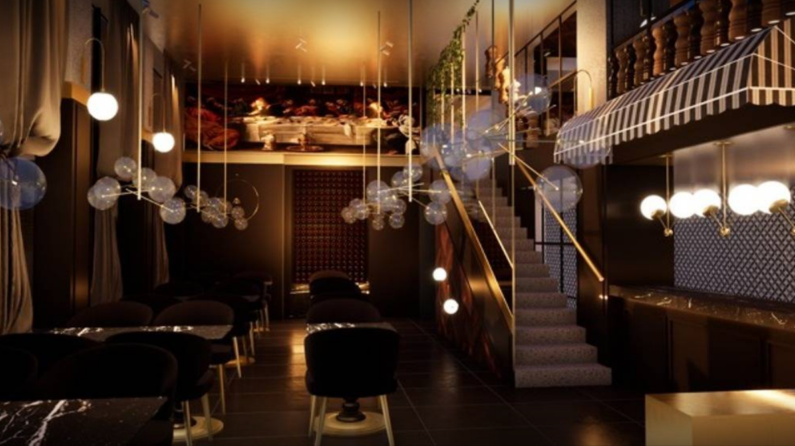

The Chef
Our chef carefully selects the best ingredients to combine to create a dish that will give you an authentic and delicious experience. And it will be remembered as a signature dish..jpg)
The Restaurant :
The Italian Lovers World restaurant is a pleasant and warm environment where you can find authentic Italian cuisine, just a few steps from Brussels Central Station. You will be welcomed by friendly and professional staff who will take care of you to ensure you have a good time and a delicious meal. 